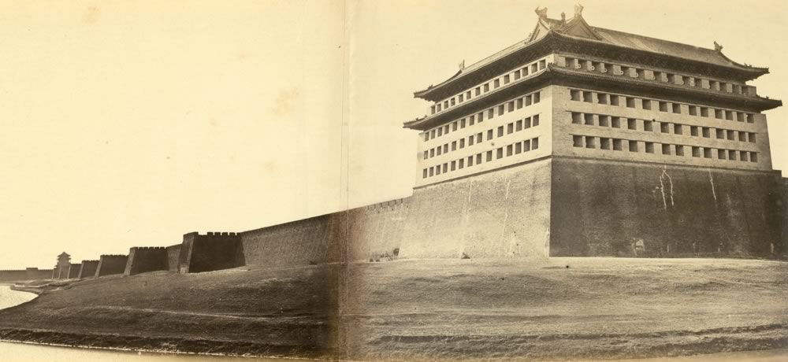
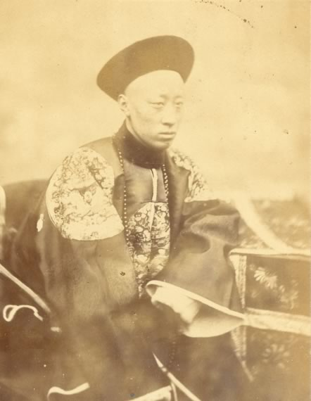
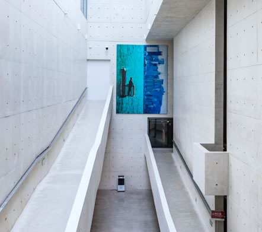
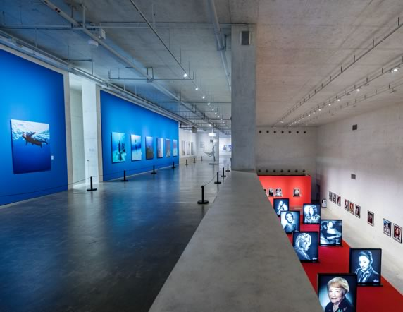
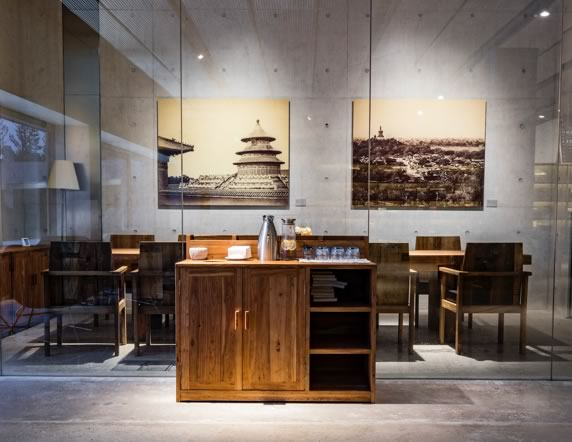
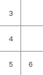
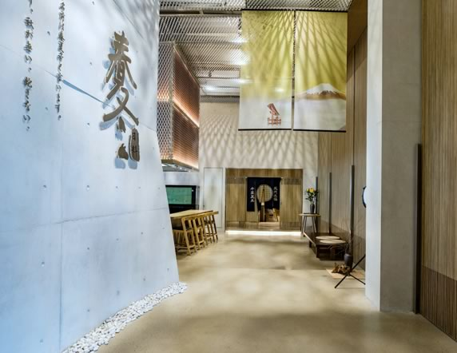
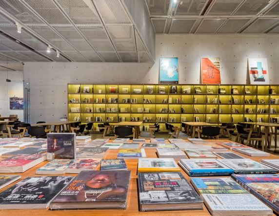

费利斯·比托 ，维多利亚时期（19世纪）最伟大摄影师之一。
作为最早到访东亚的摄影师，比托最早拍摄了中国北京、中国皇族（恭亲王）。第二次鸦片战争中，大沽、北塘炮台的记录，被世界公认为全世界最早的“战地摄影”作品，并发表于《伦敦新闻画报》。
作为当时极少数掌握全景摄影方法的摄影师，比托还拍摄了全世界最早的香港、东京、大连等地城市全景，这些影像是研究东亚城市起源的重要资料。
比托也是日本摄影史重要人物，采用浮世绘的上色工艺，发明现代手工上色摄影工艺。1997年，以比托为原型的电影《费利斯·比托》，讲述比托与日本艺妓的爱情故事。
盖蒂博物馆曾出版关于比托拍摄中国的影像，《战争美学》（Of Battle and Beauty，2000年出版），《费利斯·比托：一位摄影师的东方路》（Felice Beato: A Photographer on the Eastern Road，2010年出版）。
当前位置：学术 - 馆藏 - 历史馆藏 - 费利斯·比托
图1「 北京内城东北角及城墙
二联全景图
1860年」

图2「恭亲王奕訢
世界上第一张大清皇室成员照片
1860年」

谢子龙影像艺术馆，经湖南大学建筑学院院长魏春雨先生团队设计，建筑始于“光影的盛器，艺术的方舟”，立馆旨在“收藏中国影像历史”，愿景是为“还影像艺术一个殿堂级的博物馆”。艺术馆为中国影像艺术同世界影像艺术交流互动平台，融汇展呈，又以影像艺术典藏、研究为己任，尤其重视影像艺术发展方向之源流探讨，为厘清中国影像艺术史服务。其学术与艺术之功能一为研究中国影像发展史之资料库，二为中国影像艺术诸子百家之发声地，三为中国及世界最富价值的影像教育与传播之展览馆。林林总总，洋洋大观，无不是为中国影像艺术之前行发展倾心服务。且艺术馆以学术为血脉、以教育为己任，免费向民众开放，共享美图之光影，人性之华彩，受薰陶，受感染，亦是为社会生活向精神高处发展的服务。
我湘人素来敢为天下先。谢子龙影像艺术馆岸然矗立，亦是为天下先之湘人文化性格的一个明证。先一步，则既为天下观，亦为观天下。所谓世界看我，我看世界。于是兹事体大，泽被百代矣。
是为记。
图2「 谢子龙影像艺术馆“影之景”一角 」

谢子龙影像艺术馆介绍
谢子龙影像艺术馆座落于中部地区最大的城市湿地公园——长沙洋湖湿地公园，是全国规模最大的、以艺术家个人命名的影像艺术馆，由著名摄影家、湖南省摄影家协会主席、中国优秀民营企业家谢子龙先生个人全额投资1.5亿元创建，自2017年9月开始永久免费向公众开放。
谢子龙影像艺术馆由著名建筑艺术家、湖南大学建筑学院院长魏春雨先生及其团队设计。
全馆占地10600平方米，用白色清水混凝土一次性浇筑而成——通过建筑本身来感受影像艺术，是对当下浮华的建筑语言的抵制和颠覆，回归建筑与艺术本质。
建筑主体共四层，首层为艺文空间，融合多功能厅、艺术书店、咖啡馆、日料；二、三层为4000平米专业艺术展厅，展线长1000米，展墙最高达10米，最长达40米，采用德国Erco专业展陈灯光；四层为全套瑞典Profoto顶级高端摄影棚及艺术家创作空间。还影像艺术一座殿堂级的艺术馆——即谢子龙影像艺术馆的历史使命。
作为湖南湘江新区文化艺术新地标，谢子龙影像艺术馆是一家集影像展览、器材收藏、历史研究、学术交流等为一体的综合性影像艺术博物馆，致力构建一个艺术家和公众国际交流平台。
图3
图4
图3，展览现场
图4，玻璃房会客室
图5，谢子龙影像馆内日料店
图6，谢子龙影像馆内艺术商店
图5
图6
 XPM志愿者招募
XPM志愿者招募
 XPM名人堂
XPM名人堂
 XPM会员招募
XPM会员招募